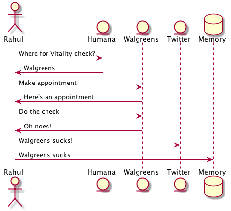
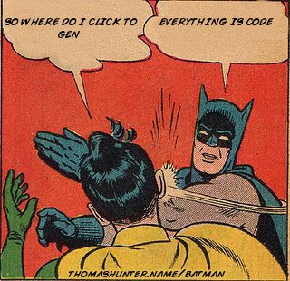

class HumanaSpec extends Specification {
def "use case 2"() {
given: "A network of facilities"
and: "A patient"
when: "I send a query to my node"
then: "it queries humana and returns the patient summary"
when: "I fetch the document"
then: "The document exists"
}
}Everything is code
Rahul Somasunderam
Who am I
Everything is ________
Pre computer:
TasksCOBOL/RDBMS:
DataAnsible:
DocumentationSequential Programming:
FunctionsObject Oriented Programming:
ClassesAgile:
StoriesFunctional Programming:
FunctionsagainThis talk:
Code
We’re interested in turning everything into code
What is code
It’s human readable.
You can test code.
You can document code.
You can diff code.
You can build tools around code.
Coincidentally, it is machine executable.
What isn’t always code
Testing , Code
Preferences
Infrastructure, Networking
Builds, Integration
Spreadsheets, Documents, Slidedecks
Diagrams
Code
This is so complicated it needs a talk of its own. I’m going to skip over it for now.
Testing
In an ideal world designed by engineers, this abomination wouldn’t exist.
That’s right
Zephyr - BAD!
Use BDD tools
Spock & mocha - GOOD!
Spock
Code can generate reports
For when the person asking for html is stubborn
Tests are code
Preferences
Use Dotfiles.
Look at rahulsom/dotfiles if you want inspiration.
Every time I need a new computer to work like my old computer, it does the job in a couple of minutes.
Preferences are code
Infrastructure
Servers
Laptops
Containers
Applications
Docker
Creates lightweight containers using
libcontainer. Earlier versions usedlxc.Uses a git like version control system to compose containers out of existing containers.
Containers are not virtual machines.
No elevated privileges. Yet.
Vagrant
Vagrant manages virtual machines
Works with VMWare and VirtualBox
Sometimes, purely immutable infrastructure is not for you
Puppet
Started off as a ruby backend with ruby client. Now sports a java backend.
DSL is still heavily inspired by ruby.
Your definition of infrastructure is still immutable.
What you want on your server vs how you want it done.
Boxen
Masterless puppet for MacOS.
Some of us have been using it for years now.
Networking
Docker Compose
web:
extends:
file: common.yml
service: webapp
ports:
- "8000:8000"
links:
- db
environment:
- DEBUG=true
db:
image: postgresDocker Compose
The 12 factor app design
Also on amazon and vmware
Networking is code
Builds
In the beginning
Bash
Make
Too freeform
Then eventually
Open Eclipse
Right click the project
Select Export
Click 'Application'
That isn’t even a build system
Newer tools
Ant
Maven
Ugly wrappers for code everywhere
Gradle
The goldilocks of build systems
Builds are code
Integration
The Jenkins DSL plugin
def project = 'quidryan/aws-sdk-test'
def branchApi = new URL("https://api.github.com/repos/${project}/branches")
def branches = new groovy.json.JsonSlurper().parse(branchApi.newReader())
branches.each {
def branchName = it.name
job {
name "${project}-${branchName}".replaceAll('/','-')
scm {
git("git://github.com/${project}.git", branchName)
}
steps {
maven("test -Dproject.name=${project}/${branchName}")
}
}
}Travis CI
Link a project once, and then configure using .travis.yml
sudo: false
language: groovy
jdk:
- oraclejdk7
before_script:
- rm -rf target
- npm install -g bower
script: "./travis.sh"
env:
global:
- GIT_NAME="Rahul Somasunderam"
- GIT_EMAIL="rahul.som@gmail.com"
- GRAILS_CENTRAL_USERNAME=rahulsom
- secure: lcK0atc7vh1s9oh7Z9m17VTKcXrw0AiVM57MoJkuwpbXeZ46qYGN+EThsCaSlT4VcektrhnLVklDIMDcxt0Osv8AYBiZoPFHdnR5ISYb236BJzyC3ODGx5Vj6KQQhBntBGwXTJjXUh5S018fZpbnMbuCsj9xi0KQ055gx8rnxEQ=
- secure: Py1s5CzVMB5QqaGmH+/rKyvilroqCS1b9q+ltOeTEgBI3jthrTVAnZf+hD3kTxL0OaA6on0LAObKV3Bh9A3Bpt/ZP8aizQjabBImXsJU+p7Hf0YGR4KZiQ4Y40FMnxk42I639FhDBTahL7j7+Mjj/L5jsOvYc03G8JRUMFX+5Sw=
cache:
directories:
- "$HOME/.grails/wrapper"
- "$HOME/.m2"
- "$HOME/.bower/cache"Integration is code
Spreadsheets, Documents and Slidedecks
The 3 most misunderstood tools in any workplace
Spreadsheets
Would a document with a table do the job?
Is it reactive? Can an R module or D3 document with a CSV do the job?
Documents
Asciidoctor
The best thing since sliced bread
Can produce html, pdf, epub, email
Can integrate code, tests, images from tests
Groovy Document Builder
Write groovy code like
xmlbuilderProduce Word and Pdf Documents
mailcli
Source at
rahulsom/mailcli.Pipe asciidoctor output to email
Documents are code
Slidedecks
The simplest solution is to use reveal.js.
But
htmlis too verbose.And
Markdownisn’t feature complete.Converting
Asciidoctorto a slidedeck is hardLazyboneshas agradleapp template forAsciidoctorandreveal.js
Show me how
If you don’t have gvm already, run this:
curl -s get.gvmtool.net | bashIf you don’t have lazybones already, run this:
gvm i lazybonesWith lazybones installed, run this:
lazybones create asciidoctor-revealjs 1.0.0 myAwesomePresentation
gradle asciidoctor -tMore Slidedecks
There’s a host of other options for building slidedecks.
impress js
deck js
roll your own js
Please stop this now js
Slidedecks are code
This slidedeck is code
Diagrams
Sequence Diagram

Plant UML
@startuml
actor Rahul
entity Humana
entity Walgreens
entity Twitter
database Memory
Rahul -> Humana : Where for Vitality check?
Humana -> Rahul : Walgreens
Rahul -> Walgreens : Make appointment
Walgreens -> Rahul : Here's an appointment
Rahul -> Walgreens : Do the check
Walgreens -> Rahul : Oh noes!
Rahul -> Twitter : Walgreens sucks!
Rahul -> Memory : Walgreens sucks
@endumlPlant UML inside Asciidoctor
[plantuml, uml, png]
....
@startuml
actor Rahul
entity Humana
entity Walgreens
entity Twitter
database Memory
Rahul -> Humana : Where for Vitality check?
Humana -> Rahul : Walgreens
Rahul -> Walgreens : Make appointment
Walgreens -> Rahul : Here's an appointment
Rahul -> Walgreens : Do the check
Walgreens -> Rahul : Oh noes!
Rahul -> Twitter : Walgreens sucks!
Rahul -> Memory : Walgreens sucks
@enduml
....What else can it do
Sequence Diagrams
Use case diagrams
Class Diagrams
Activity Diagrams
Component Diagrams
State Diagrams
Object Diagrams
Other tools
dot
ditaa
What else is code?
Questions

Use the source, Luke

Thanks
Please take 2 minutes to fill out this survey